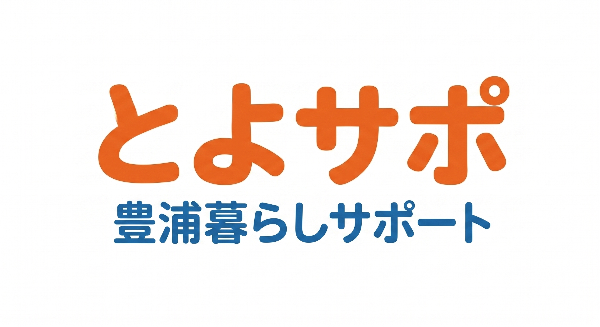

仕上がり線 (A4: 210x297mm)
安全領域 (204x291mm) ※文字はこの内側へ
こんなこと、
誰に頼めばいいの？
？
そんな暮らしのお困りごと、
とよサポにおまかせください！
＼ 小さなことでも大丈夫！お気軽にご相談ください ／


豊浦暮らしサポート
見積無料・LINE相談無料
仕上がり線 (A4: 210x297mm)
安全領域 (204x291mm) ※文字はこの内側へ
作業事例
対応エリア
豊浦町を中心に近隣4町に対応！
豊浦町
豊北町
菊川町
豊田町
エリア外もご相談ください！
✔
地域密着で迅速対応！
地元を知り尽くしたスタッフが対応します
✔
小さなことでも大歓迎！
「こんなこと」でもお気軽にどうぞ
✔
見積無料で安心！
事前にしっかりとご説明します
✔
丁寧・親切な対応！
安心しておまかせいただけます
ご依頼の流れ
① お問い合わせ
電話またはLINEで
お気軽にご連絡
▶
② ご相談・お見積り
内容をお伺いし、
お見積りをご提案
▶
▶
見積無料・LINE相談無料 まずはお気軽にご連絡ください！